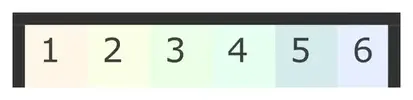
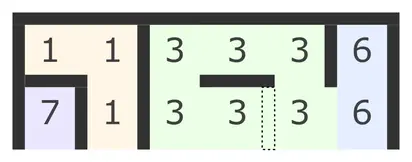
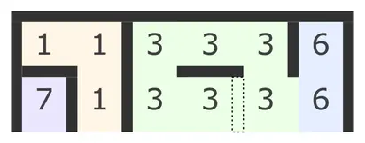
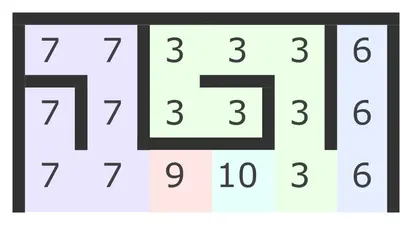
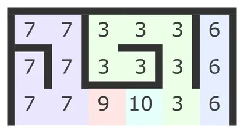

Алгоритм Еллера
Суть алгоритму
Вступ
Алгоритм еллера — це алгоритм для генерації ідеальних лабіринтів. Ідеальними лабіринтами називають такі, які не мають закритих областей (таких в які не можна потрапити з іншої частини лабіринту) та циклів (тобто, між будь-якими двома точками є лише один можливий шлях).
Як працює алгоритм
Лабіринт створюється ряд за рядом.
Спершу потрібно взяти перший ряд, і присвоїти кожній клітинці в ньому свою групу.

Після цього групи ми рухаємось з ліва на право і розставляємо стінки справа.
Якщо ми прийняли рішення не додавати стінку, то групи необхідно об'єднати.
Потім потрібно додати нижні стінки, кожна група повинна мати хоч одну дірку знизу,
інакше утвориться закрита зона.
Після цього ми копіюємо групи до нижнього ряду, лише там де ряд має дірки знизу.
 Клітинки, які залишились заповнюємо новими групами.
Після цього ми знову розставляємо стінки справа.
І якщо дві сусідні клітинки мають різні групи, то ми можемо поставити між ними стінку,
або об'єднати їх в одну групу.
Клітинки, які залишились заповнюємо новими групами.
Після цього ми знову розставляємо стінки справа.
І якщо дві сусідні клітинки мають різні групи, то ми можемо поставити між ними стінку,
або об'єднати їх в одну групу.
 Якщо ж сусідні клітинки належать до однієї групи,

то ми зобов'язані поставити між ними стінку, щоб уникнути зациклення лабіринту.
Якщо ж сусідні клітинки належать до однієї групи,

то ми зобов'язані поставити між ними стінку, щоб уникнути зациклення лабіринту.
 Після цього ми знову розствляємо нижні стінки. При чому кожна група повинна мати хоч одну дірку знизу.
Після цього ми знову розствляємо нижні стінки. При чому кожна група повинна мати хоч одну дірку знизу.
 Також, коли ми хочемо об'єднати дві групи потрібно об'єнувати змінити групу у всіх клітинках
які належать до групи. На відміну від того, що показано на зображенні не потрібно змінювати групи
в попередніх рядках. Проте потрібно змінити всі клітинки в ряді з яким ми зараз працюємо
Також, коли ми хочемо об'єднати дві групи потрібно об'єнувати змінити групу у всіх клітинках
які належать до групи. На відміну від того, що показано на зображенні не потрібно змінювати групи
в попередніх рядках. Проте потрібно змінити всі клітинки в ряді з яким ми зараз працюємо
 
Таким чином ми можемо продовжувати додаючи нові ряди.

Таким чином ми можемо продовжувати додаючи нові ряди.
 Коли ми хочемо додати останній ряд, тепер ми повинні завжди об'єднувати дві сусідні групи,
якщо вони різні, чи ставити стінку якщо вони однакові.
Так як нижній ряд останній в лабіринті, кожна клітинка в ньому повинна мати стінку знизу.
Коли ми хочемо додати останній ряд, тепер ми повинні завжди об'єднувати дві сусідні групи,
якщо вони різні, чи ставити стінку якщо вони однакові.
Так як нижній ряд останній в лабіринті, кожна клітинка в ньому повинна мати стінку знизу.

Підумок
Алгоритм еллера створює лабіринти високої якості. Ось декілька прикладів:


Також, ось реалізація алгоритму на GDscript:
func eller(rows: int, cols: int) -> Array:
var maze = create_array2D(rows, cols)
var free_group = 0
for i in rows:
var row = maze[i]
# Спершу, потрібно заповнити ряд групами
if i == 0: # Якщо це перший рядок: зоповнити його повністю новими значеннями
for j in cols:
row[j].group = free_group
free_group += 1
else: # Інакше, копіювати групи з попереднього рядка там, де немає нижньої стінки.
for j in cols:
if maze[i - 1][j].has_bottom_wall:
row[j].group = free_group
free_group += 1
else: # Клітинки, які залишились, заповнити новими групами
row[j].group = maze[i - 1][j].group
# Потім - додати бокові стінки
for j in cols:
# Додати стінку якщо:
# це остання клітинка
# АБО наступна клітинка має таку ж групу
# АБО випадково ПРИ УМОВІ що це не останній рядок
if j == cols - 1 || row[j].group == row[j + 1].group || (i < rows - 1 && deside()):
row[j].has_right_wall = true
else:
var target_group = row[j + 1].group
for x in cols:
if row[x].group == target_group:
row[x].group = row[j].group
# І додати стінки знизу
if i < rows - 1:
for j in cols:
if row[j].has_right_wall:
var group_has_hole = false
for x in j:
if row[x].has_bottom_wall == false && row[x].group == row[j].group:
group_has_hole = true
row[j].has_bottom_wall = deside() if group_has_hole else false
group_has_hole = false
elif deside():
row[j].has_bottom_wall = true
else:
for j in cols:
row[j].has_bottom_wall = true
return maze
class MazeCell:
extends Reference
export var group : int
export var has_bottom_wall : bool
export var has_right_wall : bool
func deside() -> bool:
return randf() > 0.5
func create_array2D(rows: int, cols: int) -> Array:
var arr = []
for i in rows:
arr.append([])
for j in cols:
arr[i].append(MazeCell.new())
return arr